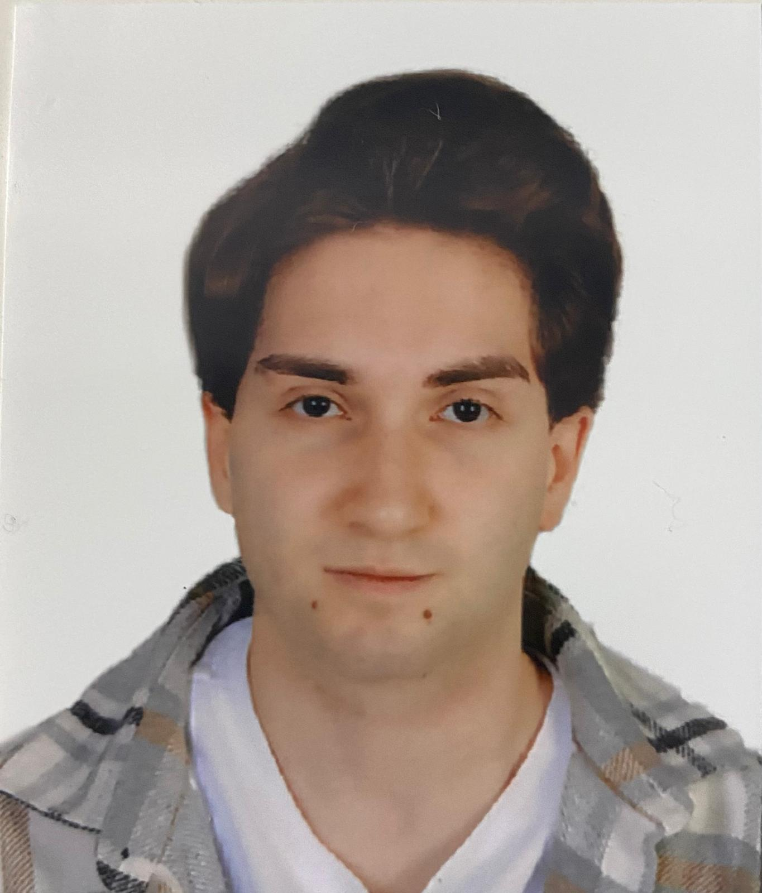

Ahmet Kızgın
Management Information Systems Student & .NET Developer
3rd-year MIS student at Izmir Bakirçay University. Passionate about digital transformation, data-driven solutions, and building robust backend architectures within the .NET ecosystem.
Education
- Izmir Bakirçay University - Management Information Systems (English) (2023 - 2026)
Skills & Expertise
- Development: .NET Developer, C#, Python, SQL & MySQL, React, Laravel
- Enterprise Tools: Power Platform (Power BI, Power Apps, Power Automate), SharePoint, SAP & ERP
- Languages: Turkish (Native), English (Advanced), German (Basic)
Experience & Projects
- Nestlé (IT Intern): Developed end-to-end automation workflows using Power Platform and observed live SAP & ERP operations.
- Open Source Software Camp: Completed intensive training tracks in Full Stack Development (React & Laravel) and Data Modeling & Visualization.
Download CV
You can download my professional CV in PDF format below:
Download my CV (PDF)Contact
Phone: 05343950381
Email: ahmetkizgin16@icloud.com
Address: Izmir, Turkey
Reference: Serhat Peker (Izmir Bakirçay University / Dr. Asst. Prof.) - serhat.peker@bakircay.edu.tr